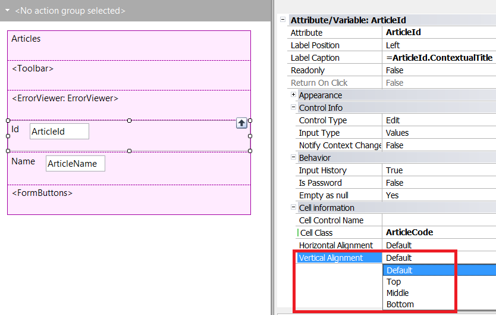
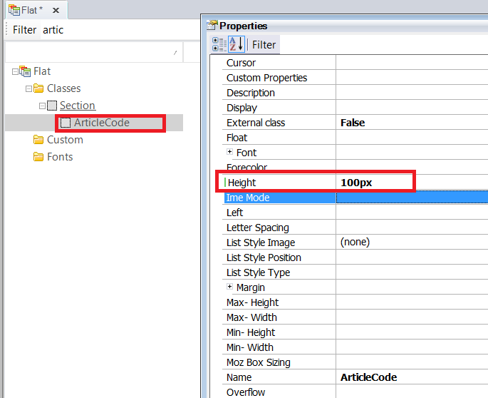
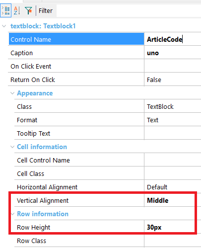

Vertical Alignment is a control property for Responsive Web Applications, whose purpose is to align the control to the top, middle or bottom of the cell where it's contained. In fact, it's a property of the control cell. ValuesDefault, Top, Middle, Bottom By default, the height of a responsive cell is the same as the height of the cell contents. The only way to vertically align the contents of a cell (to the top, middle or bottom), is to give it a fixed height greater than the height of the contents. Also, not all the columns of the same responsive row have the same height. The height is given by the contents of the cell, as mentioned before. ExampleConsider the following example where the attribute "ArticleCode" is going to be vertically aligned to the middle of the cell.  To get the desired results, the cell is assigned to a class where the height is given a fixed value:  Another possibility is to assign a fixed height to the row, using the Row Height property (available as since GeneXus 15).  AvailabilityAs from GeneXus X Evolution 3 upgrade 4. See Also
|
| Backlinks |
| Horizontal Alignment property |